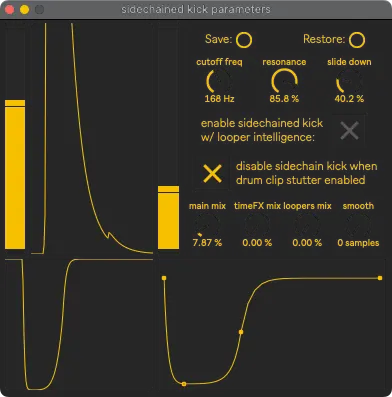

Kick Ducker
This allows the tuba’s sound to duck out of the way of the kick drum. This FX is not recorded into the looper.
For this to work, SousaPlayback’s drum bus’s external output must be routed to SousaFX’s “drum tracks L/R” inputs.
{kind=link}
enable sidechain kick with looper intelligence
Available in the bindings as
toggle sidechained kick.function bottom-right
Click and drag the points to change the volume envelope shape. clicks create points. shift-click deletes points. option-click-drag curves lines.
cutoff freq
Sets the sidechain signal’s lowpass filter’s cutoff frequency.
resonance
Sets the sidechain signal’s lowpass filter’s resonance.
slide down
Sets the sidechain signal’s envelope’s fall time.
sliders
The left slider sets the point at which the rising envelope will trigger the duck. The duck cannot be triggered again until the falling envelope passes the right slider.
disable sidechain kick when drum clip stutter enabled
When the drum clips are effected by the stutter, disable the ducker.
smooth
smooths the duck so it doesn’t click when retriggered in the middle of ducking.
mix dials
Adjusts the amount of ducking for the wobble, delays & reverb, and looper.